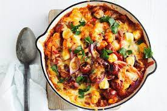

Cheesy Gnocchi and Meatballs

Dangerously short on time?
This genius meatball bake means you can avoid a kitchen crisis and get dinner on the table in just 10 minutes.
Ingredients
- 1 red capsicum
- 1 red onion
- 3 fresh chorizo sausages
- 400g jar red wine and garlic pastsa sauce
- 500g packet of fresh gnocchi
- Fresh continental parsley leaves
Steps
- Boil the kettle and heat a deep ovenproof frying pan over medium-high heat. Preheat grill on high.
- While pan and water heat up, deseed capsicum. Slice the capsicum and onion.
- Add oil to pan. Slit end of sausages and squeeze small portions of mince from casing into pan. Cook, tossing, for 1 minute or until starts to brown. Add capsicum and onion. Cook, tossing, for 2 minutes or until onion starts to soften. Add sauce. Stir until combined.
- While the meatballs are cooking, pour the boiling water into a large saucepan over high heat. (Don’t fill too high as it will take too long to boil again.) Add the gnocchi and cook until the gnocchi rises to the surface. Drain.
- Add gnocchi to frying pan. Toss until well combined. Sprinkle over cheese. Grill for 1-2 minutes or until melted. Top with parsley.